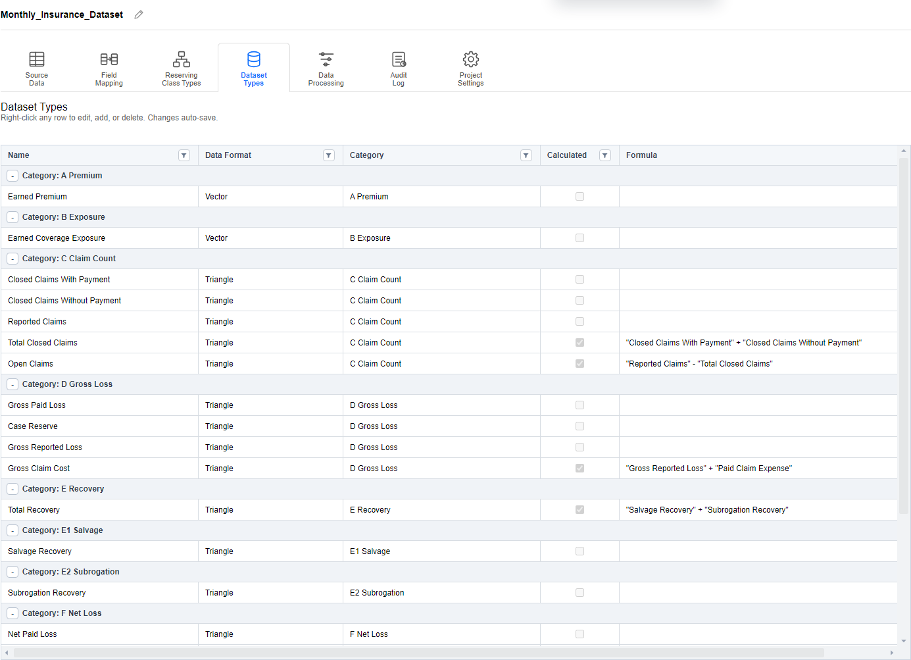

Project Explorer and Settings
Check how the project is defined
Use Project Explorer to inspect the source data, segment structure, dataset types, and dates that the rest of the project uses.
Select the Demo Project
- From Home, choose Project Explorer.
- Expand Test/Demos and single-click Monthly_Insurance_Dataset to inspect its configuration.
- Use the ribbon to move between Source Data, Field Mapping, Reserving Class Types, Dataset Types, Data Processing, Audit Log, and Project Settings.
- Double-click the project in the tree when you want to open its Project Page and work with dataset instances.

Check the Source and Periods
- Open Source Data and check the source identity and the origin/development date boundaries.
- For this guide, check the 2016–2025 origin span and May 2026 development end date. The dataset walkthrough uses 12-month origin and development lengths.
- Open Field Mapping to see which source fields supply dataset values and segment levels.
- Open Reserving Class Types to inspect the hierarchy. The walkthrough's selected path is Commercial Auto → All States → CH02 → Comprehensive.
Use the source panel's Table details and Import settings controls when you need more information about the source. A source refresh affects project data; inspect the configured source before starting one.
Understand Dataset Types
In Dataset Types, find Gross Paid Loss and check its data format and category. Find Guide Paid Ultimate to identify the output type used in the DFM walkthrough.
A dataset type is a project definition. A dataset instance is the named triangle or vector you open for one segment on the Project Page. A method's Name and Output Type can therefore differ.
Review a Configuration Change
- Open Audit Log to inspect recorded changes.
- Return to the Project Page and select the demo segment.
- Use Refresh Table, reopen the affected dataset, and check its periods and values.
Continue with Dataset Viewer to inspect the actual data.